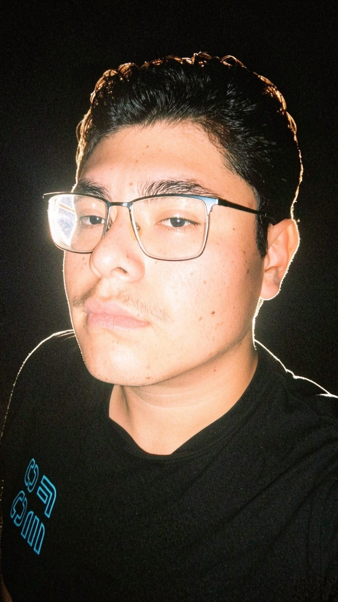

Hola, soy Bayron Daniel y este es un intento de crear una página web sobre mi y mis gustos.

Soy un estudiante de la UTl, de la rama de Entornos Vituales y Negocios Digitales (LEVN 402). Elegi esta carrera ya que quiese cambiar a una carrera que me llamara más la atención, ya que anterior mente estudie la prepa en el área de Alimentos y Bebidas.
Puedo considerarme como una persona que no le facina el estudio, pero me esfuerzo por aprender y utilizar lo aprendido en las tareas que nos dejan los maestros. Las materias que más me han gustado han sido las de Diseño Digital, ya que la maestra no ha enseñado a utilizar photoshop y esta herramienta me sirve para poder mejorar el diseño y el estilo de fotos, ya que me gusta tomar fotos y guardar esos momentos que se podrian considerar unicos o muy raros que puedan pasar.
Datos personales
| Nombre: | Bayron Daniel |
|---|---|
| Ocupación: | Estudiante |
| Area de estudio: | Entornos Virtuales y Negocios Digitales |
| Ciudad: | León, Gto. |
| Intereses: | Fotografía, videojuegos y tecnología. |
Mis intereses
Algunos temas que más me interesan son:
- Fotografía
- Videojuegos
- Tecnología
La fotografía me gusta ya que siempre prefiero tomar las fotos yo a salir en ellas, no me gusta salir en fotos, además luego hay gente que no sabe tomar bien las fotos y pos digo mejor las tomo yo.
Desde que tengo memoria, siempre he sido fan de los videojuegos. Dependiendo de que quiera hacer en ese momento tengo uno, como si quiero relajarme y crear cosas tengo Minecraft, si quiero estresarme y enojarme me pongo el reto de pasarme juegos en la maxima dificultad sirve que mejorar en mi forma de jugar y me desahogo un poco.
Siempre me ha gustado las computadores y los celulares, checar y investigar que opciones tienen, como sus funciones y diseños que vienen en cada modelo, también me ha gustado armar y desarmar las cosas para ver como funcionan por dentro.